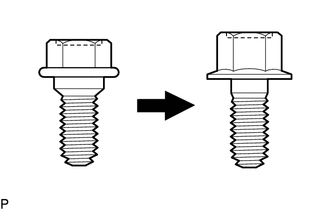

RM3140CG
_59
车辆外饰
_024017
车门/舱门
_0117777
后门
N
车门/舱门 后门 调节
注意/小心/提示

0.698,0.094 1.01,0.25
0.313,0.156
10
false
*a
2.51,0.083 2.823,0.24
0.313,0.156
10
false
*b
| *a | 定心螺栓 |
| *b | 标准螺栓 |
- 提示：
- ·
右侧操作程序与左侧相同。
·下面程序适用于左侧。
·定心螺栓用于将车门铰链固定在车身和车门上。在安装了定心螺栓的情况下不能调节车门。进行调节时，用标准螺栓替换定心螺栓。
·标准螺栓表中列出了标准螺栓的规定扭矩。
单击此处 概述>规格>标准螺栓>标准螺栓的规定扭矩201406,999999,_V1,_023979,_0115959,RM100000000F4BP,
程序

 1.检查后门
1.检查后门
a.
检查并确认部位“a”至“n”的间隙测量值均处于各自的标准范围内。

4.167,0.177 4.323,0.375
0.156,0.198
10
false
a
4.344,1.063 4.5,1.26
0.156,0.198
10
false
b
5.552,1.219 5.708,1.417
0.156,0.198
10
false
c
4.823,0.875 4.979,1.073
0.156,0.198
10
false
d
6.26,2.833 6.417,3.031
0.156,0.198
10
false
e
6.719,2.594 6.875,2.792
0.156,0.198
10
false
f
4.052,4.198 4.208,4.396
0.156,0.198
10
false
g
2.542,4.208 2.75,4.427
0.208,0.219
10
false
h
1.625,4.542 1.781,4.74
0.156,0.198
10
false
i
1.052,4.167 1.208,4.365
0.156,0.198
10
false
j
0.927,1.771 1.083,1.969
0.156,0.198
10
false
k
0.344,1.406 0.5,1.604
0.156,0.198
10
false
l
2.229,1.104 2.385,1.302
0.156,0.198
10
false
m
2.865,0.813 3.021,1.01
0.156,0.198
10
false
n
| 部位 | 测量值 | 部位 | 测量值 |
|---|---|---|---|
| a | 3.9 至 6.9 mm（0.154 至 0.272 in.） | b | 4.9 至 7.9 mm（0.193 至 0.311 in.） |
| c | 3.7 至 6.7 mm（0.146 至 0.264 in.） | d | 6.7 至 9.7 mm（0.264 至 0.382 in.） |
| e | 2.4 至 5.4 mm（0.0945 至 0.213 in.） | f | -1.5 至 1.5 mm（-0.0591 至 0.0591 in.） |
| g | 4.2 至 7.2 mm（0.165 至 0.283 in.） | h | 4.2 至 7.2 mm（0.165 至 0.283 in.） |
| i | 3.0 至 5.4 mm（0.118 至 0.213 in.） | j | -1.2 至 1.2 mm（-0.0472 至 0.0472 in.） |
| k | 3.0 至 5.4 mm（0.118 至 0.213 in.） | l | -1.2 至 1.2 mm（-0.0472 至 0.0472 in.） |
| m | 3.5 至 6.5 mm（0.138 至 0.256 in.） | n | -1.4 至 1.6 mm（-0.0551 至 0.0630 in.） |
2.调节后门
- 备注：
-
调节车门锁扣时，确保将点火开关置于 OFF 位置。
a.

使用 SST 松开车身上的铰链螺栓并调节车门位置。
- SST
- 09812-00010
b.
调节后紧固车身上的铰链螺栓。
- 扭矩：
- 26 N*m (265 kgf*cm, 19 ft.*lbf)
c.
松开车门上的铰链螺栓并调节车门位置。
d.
调节后紧固车门上的铰链螺栓。
- 扭矩：
- 26 N*m (265 kgf*cm, 19 ft.*lbf)
e.
使用“TORX”梅花套筒扳手 T40，轻轻松开锁扣安装螺钉。
f.
使用铜棒和锤子，敲击锁扣以调节其位置。
g.
调节后，使用“TORX”梅花套筒扳手 T40 紧固锁扣安装螺钉。
- 扭矩：
- 23 N*m (235 kgf*cm, 17 ft.*lbf)